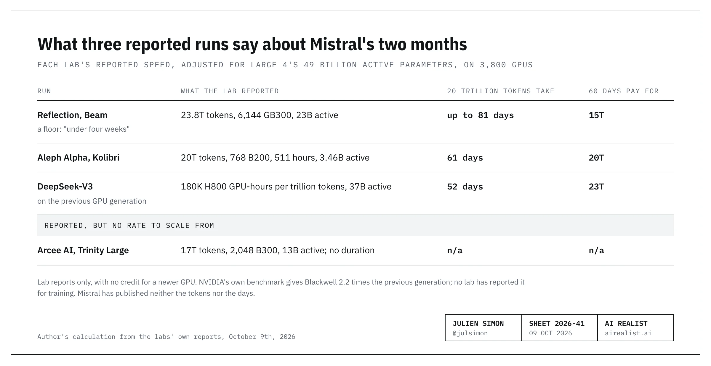
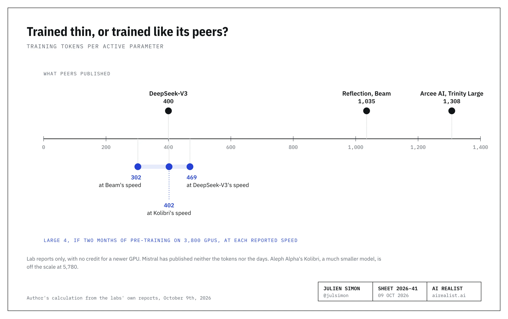
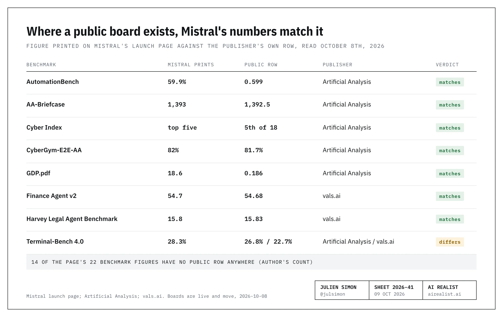

On October 6th, 2026, Mistral opened a public preview of Mistral Large 4, “very officially: le Chonk”: one trillion parameters, an API, and a promise that the weights will follow by the end of the month.[1] Twelve days earlier, inVent Mauvais, I had set the test:
If a general-purpose Mistral model ships before the memo’s April 2027 deadline and scores above, say, 30 on Artificial Analysis’s intelligence index, against 14 for its best today and 45 for the Chinese model it now serves, the efficiency bet is back on.[2]
The preview scores 38 [3]. The bet is back on, but it is not won. A preview hasn't shipped, and GLM-5.3, the Chinese model Mistral made the default in its own web app in September, sits at 45 on the same index.[4]
Large 4 is a real model and a significant step for Mistral. It is also a model built to be rented by banks, law firms, and governments, and its launch page is written for the rankings those buyers read. Until a license file exists and the weights you can download match the benchmarked weights, “open” is just a word on a page.
If you buy models for a European company, I’d expect a sales deck within the month. I read Mistral’s page the way I readKolibriearlier this month: what shipped, what it cost to train, and what the numbers say when you check them at the source.
A page of pictures
Aleph Alpha released Kolibri on October 3rd: 78 billion parameters, the weights, an Apache 2.0 license, and a 189-page technical report that names the GPUs, the hours, the tokens, and the Chinese models that wrote part of its training data.[5] Three days later, Mistral, with thirteen times the parameters and a €3 billion round behind it, published a web page with 26 chart images.[6] As of October 8th, the launch page carries no license, no context window, and no report. Mistral’s developer docs do have a short model card: 1.05 trillion parameters, a one-million-token context window, and the word “Open” where its other models name a license. The launch page says “further details” will come with the weights.[1] For developers, launch day brought one new notebook in Mistral’s cookbook repository, on drawing bounding boxes with the model, of all things, and no blog post beyond the announcement.[7]
The page also changed after it went up. At launch, it said “49 billion active parameters”; by the evening of October 7th, it said 52 billion, with no note. The explanation is on Hugging Face, where the placeholder page says 49 billion “per token” and “52 billion including embeddings and output layers”.[8] A footnote crediting the coding scores to “the ArtificialAnalysis coding index” remained on the page 86 minutes after publication and disappeared by the next morning.[9]
Why now, and not in a month with the weights? In June, Arthur Mensch, the chief executive, promised an open-weight model “this summer,” and summer ended on September 23rd. On September 24th, BNP Paribas, a Mistral shareholder and a customer that renewed in May, announced a five-year agreement with Google Cloud for Gemini models and agents, starting in its Corporate & Institutional Banking division. On October 5th, Reflection AI wrote that its new model Beam “advances the Western open-weight frontier”, and Guillaume Lample, Mistral’s chief scientist, was already talking at a press conference about a customer, Ecosia, leaving. A preview with a date answers both. It does not answer a buyer.[10]
Now the case for Mistral. In September, Mistral’s best model scored 14 on Artificial Analysis’s index. This one scores 38, measured, not estimated. It was trained on 3,800 GPUs; a day earlier, Reflection used 6,144 to pre-train a half-size model.[11] Mistral’s vice-president for science told TechCrunch its count was “two to three times less than our Chinese competitors”.[12] On that index it is 13 points ahead of the best American open-weight model and 8 ahead of the best open-weight model from anywhere outside China, and on one cybersecurity test it is first of 18 models, open or closed.[13] A preview is labeled a preview. The weights have a date. And Mistral said out loud that the model is still training, which it didn't have to.
All true. So why does the page withhold the three things a buyer needs: a license, a token count, and which checkpoint was measured?
How do you train a trillion parameters on 3,800 GPUs?
Somebody asked. A data scientist with 77,000 followers on X wrote on October 6th about the page’s hardware sentence, saying he couldn't see how it was possible to train a 1,000-billion-parameter model “from scratch” on 3,800 GPUs, and that he wanted more information. The next morning, an account whose bio reads “Doing stuff at @mistralai” quoted his post with a two-word answer: “Skill issue”.[14]
The question was fair, and the answer was two words. Here is a longer one.
Large 4 has a trillion parameters, and each token passes through 49 billion of them. That is what mixture-of-experts means: at inference time, a token goes to a few of the experts and skips the rest. Training usually works the same way, though a few research designs send every token through every expert. In the usual case, only the experts a token is routed to, plus the layers every token shares, do the work and get updated for it; the rest sit that token out. So compute follows the 49 billion, and memory follows the trillion.[15]
So how long would the training take? Assume 20 trillion training tokens, as Kolibri used in pre-training. Three labs have published how fast their own runs went: so many tokens, on so many GPUs, in so many hours. Take each lab’s speed per GPU, adjust it for Large 4’s 49 billion active parameters, and ask how long 3,800 GPUs would need. The 49 billion is Mistral’s figure, and it already counts however many experts a token is sent to, so the sum needs no guess about their number. At the slowest speed consistent with what Reflection published for Beam, up to 81 days. At Kolibri’s speed, 61. At DeepSeek-V3’s, 52.[16] Memory doesn't rule it out either: the full trillion parameters, plus their gradients and optimizer, take about 16 terabytes on a cluster with more than 700.[17] At any of the three speeds, it fits in under three months. That is the answer, and it took two paragraphs.
The arithmetic cannot tell you which run Mistral did, because the page leaves out the tokens, the days, and the precision. The press got more than the page. On launch day, CNBC reported that the model trained “over two months” on 4,000 GPUs, and Mistral’s vice-president for science gave TechCrunch the same count; the page says 3,800.[12]
So turn the sum around. If those two months were pre-training alone, which CNBC does not say, sixty days on 3,800 GPUs pay for about 15 trillion tokens at Beam’s speed, 20 trillion at Kolibri’s and 23 trillion at DeepSeek-V3’s (my calculation).[16]

These are runs that labs reported, and nothing else. Beam and Kolibri ran on Blackwell GPUs, the generation Mistral’s page names. DeepSeek-V3 ran on the previous generation, and I give Mistral’s newer GPUs no credit for it, because none of the lab reports I have read say what Blackwell adds to training. All three figures lean low: Beam’s is a floor, Kolibri is a much smaller model, and DeepSeek’s GPUs were older. NVIDIA says 2.2 times, from its own run of an industry benchmark. Take that on trust and DeepSeek’s line becomes 50 trillion. DeepSeek trained with most of its matrix arithmetic in 8-bit, a lower precision that its report says can double the speed in theory; Arcee AI’s report on Trinity Large, trained on 2,048 B300 GPUs, says its team disabled its 8-bit kernels for the main matrix operations mid-run, to stabilize training, and fell back to 16-bit.
Counted how the labs compare runs, in tokens per active parameter: 15 to 23 trillion is 300 to 470, around DeepSeek-V3’s 400, and under half of Beam’s 1,035 or Trinity Large’s 1,300.[18] My reading, if those two months were pre-training alone: Large 4 was fed like DeepSeek-V3, not like Beam or Trinity Large. The token count the page withholds would settle it. So would a lab’s measure of Blackwell’s gain: at NVIDIA’s multiple, DeepSeek’s line puts Large 4 at about Beam’s level.

Three models, one name
Mistral did describe one part of the run. The reinforcement learning stage runs “at our current scale (3k GPUs)” and produces “roughly 33 billion tokens per day”, about half of them usable for training. That is 127 tokens per GPU per second, on my count. It is a fleet average, not a training rate: those GPUs also generate the attempts and run the tools.[19] At that rate, a month adds about one trillion tokens, half of them usable, which is small next to pre-training. Reflection ran Beam’s reinforcement learning on 10,500 GB300s for four weeks; Mistral’s 3,000 would need 98 days to put in the same GPU-hours.[11] And it has not finished. “The reinforcement learning run behind this preview is still in flight,” the page says, and Mensch posted the same on launch day: “RL shows no sign of saturation”.[20]
What does “no sign of saturation” rest on? The page shows one chart of training reward for four tasks: customer support, “agentic cross-application business workflows”, “spreadsheet editing” and factual question answering. I read the chart as three lines still climbing and one, customer support, close to flat above 0.90 for its last third. The chart’s right edge is labeled, for a run still in flight, “End of training”.[21] The reward on the tasks you train on tells you the model is learning them. Whether it carries over is a separate measurement, and for that the page offers one sentence, saying the gains “transfer to downstream evals”, and a second chart of three tasks labeled only by type (“Hard coding agent task”, for example), with no benchmark named. Reflection published Beam’s benchmark scores as training progressed; Mistral published its training reward.[11]
Two of those four training tasks deserve a second look. The page describes AutomationBench as cross-application business workflows: 657 workflows across office applications. It describes Finch as spreadsheet editing. The page then reports both benchmarks with pride.[22]
And who wrote the practice material? Aleph Alpha answered that for Kolibri in its report: mainly GLM-5.2, GLM-5.3, and a Qwen model. Mistral’s page has one sentence on training data: “more than 160 languages.” Its own expert evaluation compares it with one model, GLM-5.3, which it serves on its own platform.[23] That proves nothing about teachers. It is the first question the promised details have to answer.
And whose design is it? DeepSeek’s V4 Pro activates the same 49 billion parameters per token as Large 4, out of 1.6 trillion.[24] That match may be a coincidence. It would not be the first borrowed blueprint. Open the configuration file Mistral published with Large 3 and set it beside DeepSeek-V3’s: the same width, 7,168; the same 61 layers; the same 128 attention heads; the same four settings of DeepSeek’s own attention design, to the digit; the same expert capacity per layer, cut into 128 experts where DeepSeek has 256.[25] Neither Mistral’s announcement nor its model card mentions DeepSeek. An architecture is not a set of weights, and building on a published design is sensible engineering. If Large 4 follows Large 3, “Forged in Europe” states where the GPUs sit. When Large 4’s weights land, open its configuration file first.
The run is unfinished, so the model on the charts is a checkpoint; the model behind the API may be a later one, and I’d expect the weights due at the end of October to be whichever one is ready, since Mistral says it expects “large and rapid improvements in the weeks and months to come”.[1] Three different models can share the same name, and nothing on the page says which one was measured.
Four short answers
As for “Skill issue”: 77 minutes after the data scientist objected to the two-word reply in public, Brian Hall, Mistral’s chief marketing officer and a former colleague of mine at AWS, replied in the thread, 21 minutes after I had tagged him:
That was a silly and ill-advised response [...] I’m sorry for that. That is not representative of Mistral culture I promise.[26]
I thanked him for it then.
It was not the first short answer. On June 16th a founder who wrote that he admired Mensch answered one of his posts with four numbered objections and called it “incredibly misplayed”; the next day Mensch’s whole reply was “You’re very premier degré”, you take things too literally.[27] On September 20th, Mensch answered Juan Branco, a left-wing lawyer and activist who, two days earlier, had called Mistral “un scandale industriel majeur” on five claims and no document. Two posts, as I read them on September 21st: Mistral’s work displeases “certaines petites frappes”, certain small-time thugs. Mensch contested none of the five; Branco replied within a minute that things would “shake” for him after the election, and by September 22nd Mensch had deleted both posts.[28]
Nor was it the last. On October 6th, Politico reported that Ecosia, a Berlin search engine, was dropping Mistral for open models, including Chinese ones. Its chief executive gave four reasons: first, “We are disappointed with the quality of Mistral”; second, in Politico’s words, “recurring technical problems, including overloaded servers”. Nuclear power in France’s energy mix came third, and Mistral’s foreign investors fourth. Mistral did not respond to Politico’s request for comment, the paper wrote, but it printed what Lample had said at a press conference the day before: “We can even give them early access today if they want.” Two days later Mensch quoted Politico’s post on X: “We serve [Chinese models] as well! Sorry if using nuclear energy is a real blocker”. On the quality and the servers, nothing.[29]
That makes four short answers in under four months, three of them from the chief executive. Two have since been disowned: he deleted one himself, and the company apologized for the other, the one an employee wrote. I’d call it a reflex, and one Mistral should lose.
Where a board exists, the numbers match. The sentences don’t.
With one exception, every figure on the page with a public source row matches that row: Artificial Analysis for the agentic and cyber tests, vals.ai for finance and law. The exception is Terminal-Bench, where Mistral prints 28.3%, and the two boards that ran it get 26.8% and 22.7% on their own setups.[30] More than half of the figures, 14 of 22 by my count, have no public row anywhere (the coding scores, Cybench, the safety benchmarks, a human evaluation by Surge AI with no sample size), so those are Mistral’s word.[31]

One sentence on the page contradicts the chart beneath it, and a second holds only for the benchmarks the page chose to chart.
The first: “ML4 is state of the art on SciCode-Verified among open-weight models.” The chart below it, in the same section, shows Large 4 at 91.8, behind MiMo-V2.6-Pro at 91.9, GLM-5.3 at 92.5, and Qwen3.8 at 93.8. All three are open-weight.[32]
The second: Mistral says it had vals.ai test the model on legal and financial tasks, “finding the model exceeds GPT-6-Astra in both cases”. On the two benchmarks the page charts, it does. On Finance Agent v2, the margin is 54.7 against 53.5, inside Astra’s error bar. On Harvey’s Legal Agent Benchmark, which vals.ai runs, it is 15.8 against 5.4, ahead of every open-weight model on the board and tied for sixth of 76 overall, Large 4’s best rank on vals.ai. On vals.ai’s own Legal Research Bench, which the page does not chart, Large 4 scores 31.7 and Astra 39.4, and Large 4 is 39th of 75.[33]
The rest is selection. In its coding and agentic sections, the page measures itself against DeepSeek V4 Pro. DeepSeek’s V4.1 Flash, which costs less per token, beats Large 4 on the intelligence index, AA-Briefcase, and AutomationBench, and the page doesn't name it in those sections.[34] On AutomationBench, the page puts Large 4 “ahead of Kimi K3, MiMo-V2.6-Pro, and DeepSeek V4 Pro”, and Mistral’s account repeated the three names on X the next day, under the same chart. MiMo-V2.6-Pro, which the sentence names, has no bar on that chart. The tallest bar is GLM-5.3, at 62.2. The leads over Kimi K3 and MiMo-V2.6-Pro are under two points, and on the board’s stricter count, Large 4 trails both.[35] On October 9th, Arena, which scores models on real agent sessions, congratulated Mistral on landing “in the Agent Arena top 15 labs”. Its board has 16 labs, and Large 4 sits 43rd of 52 models, 6.6 points below the average model, with DeepSeek V4.1 Flash, Kimi K3 and MiMo-V2.6-Pro all above it. Its worst score is for calling tools that don't exist.[36] The claim of “surpassing even frontier closed models” in visual grounding comes with one example, 42.0 against 41.5; on the chart next to it, the same closed model leads by two points.[37]
Is that just how launch pages are written? Not this month. The day before, Reflection published Beam’s scores as a table of 21 benchmarks. Beam has the top score on two of them. The post’s own summary: “Where frontier open models like Kimi K3 remain ahead on raw capability, Beam’s advantage is efficiency at inference time.” DeepSeek V4.1 Flash, the model Mistral’s sections leave out, has its own column, and on its “AutomationBench public” row it beats Beam by nearly 18 points. Aleph Alpha’s card names the software that ran its scores and prints the rule under which the Qwen model that outscores Kolibri is “greyed out and unmarked”.[38] Neither Beam nor Kolibri has a row on Artificial Analysis. Large 4 does, and its numbers match, except for Terminal-Bench. Of the three, Mistral had the best evidence and wrote the least candid page.
On cybersecurity, I owe Mistral the confirmation. Its claims of “top five models globally” and “the highest of any model” both check out on Artificial Analysis. Context: on the winning test, Claude Opus 5.5 refused 98.5% of tasks, and GPT-6 Astra refused all of them. On the index’s other two tests, both score above Large 4.[39] Mistral says the same about the refusals and turns it into the pitch: a model that doesn’t refuse the defender. That’s a legitimate product. It also ranks first on four tasks out of 131 in a race two favorites declined to run.
The page also reports the highest refusal rate on harmful cyber prompts of any open model: 95.3% on three public test sets, versus zero refusals on Artificial Analysis’s three tests, which pose defensive tasks and never ask for an exploit. Different prompts, no contradiction. Vetted partners will get a lower setting, a buyer who self-hosts picks their own, and no public board measures either.[40]
Who is this for?
Read the page’s list of benchmarks and demos as a customer list: legal agents, finance agents, cyber defense, engineering drawings, and workflows across “Gmail, Google Sheets, Slack, and Salesforce”.[1] Then look at the home page, where the menu reads energy and utilities, manufacturing, financial services, public sector, and the button says “Get in touch”.[41] Enterprises “across the world” worked with Mistral “to train ML4”, in the same environment it sells as Forge, and, until the weights ship, Mistral is red-teaming it with “cybersecurity leaders, vetted partners, and state authorities”, who “will access the same model with reduced moderation and expanded cyber capabilities”.[1]
That is not a page for developers. Developers want a license, and Mistral knows how to write one: Large 3 shipped under Apache 2.0 in December.[42] Reflection named Apache 2.0 for Beam before it had a weight to download.[11] Mistral’s page names none; its docs say “Open”, and The New Stack and VentureBeat reported on launch day, neither saying from whom, that the weights are expected under a custom license.[1]
It is tempting to say nobody will host a trillion parameters, so the weights don’t matter. Size is not the reason. At 8-bit precision, the weights are about one terabyte. The Register says the model fits a single eight-GPU server, and the Chinese labs ship open models larger than this one.[43] The reason is in Mistral’s own download counters. Its previous flagship repository was downloaded 2,008 times in the last thirty days, compared with 1.4 million for DeepSeek-V3, while Mistral’s small models are downloaded by the million.[44] Developers come to Mistral for the small models, and buyers of the big one don’t download it. They sign.
And they will pay for it. Large 4 lists at $1.36 and $4.18 per million tokens, nearly three times Large 3, and half that during a two-week launch sale. On the same price list, Mistral sells GLM-5.3, the model that scores 45, at $1.40 and $4.40.[45] Artificial Analysis puts the average cost of a task on its index at $1.13 at list price and $0.57 during the sale, against $0.27 for DeepSeek V4.1 Flash and $0.13 for MiMo-V2.6-Pro, a trillion-parameter model of the same shape; both score higher.[46] The day after the launch, Anthropic released Claude Haiku 5.5, a closed model. At its top reasoning setting, it scores 43 on the same index at $0.21 a task: five points above Large 4, at under a fifth of the list cost (my calculation).[47] You are not paying that premium for the score. You are paying for “a European deployment that Mistral operates end-to-end”, in what the page calls “Mistral’s own datacenters”. The one site Mistral’s chief scientist names, Bruyères-le-Châtel, belongs to Eclairion; Mistral owns the machines.[48]
Besides the model, you get a team, and Les Echos has one account of that. On September 17th, the paper quoted an unnamed consultant who, it said, had spent months beside Mistral at a large French client: its teams were often “condescendantes”, condescending, with consulting firms, a complaint the paper said comes up regularly. Mistral told the paper that deploying AI in a large company is “un projet d’ingénierie à part entière”, an engineering project in its own right, and that “des phases d’ajustement peuvent survenir”, adjustment phases can occur.[49]
Can Mistral afford the tone? With some customers, I’d say yes. In a notice published in July, the German state of Hesse awarded it €7.8 million without a competitive tender, after requiring models developed inside the European Economic Area or in a country the EU rates as adequate on data protection, as I wrote in “Vent Mauvais”. A buyer who chooses by rule does not leave over a post on X. Ecosia was bound by no such rule, and left over quality and servers. Since October 3rd, a second European lab has a model that meets the same requirements, with its weights and report.[50]
For a buyer who must stay under European law, the managed deployment may be worth the price. I’d just want it described as what it is: a managed service with a promised download link.
Mistral has written down what it wants to be. From its About page:
Mistral’s co-founders saw the need for a different kind of AI company: a European leader that combines cutting-edge innovation with openness, transparency, cost efficiency, and responsibility.
Its largest model launched without a license or a technical report. Its careers page lists five values, and three of them appear here. Customer centricity: “Our customers’ success is the most important technology evaluation we look at”. Ecosia was a customer, and the chief executive’s reply to its evaluation said nothing about the quality. Rigor: “an analytical and data-driven approach to decision-making”, from a company whose page calls Large 4 “state of the art” among open-weight models above a chart showing three of them ahead. And “Low-ego”, defined as getting your hands dirty wherever needed, is the French page’s “Humilité”. Skill issue.[51]
What should come next
By October 31st: a public repository with the weights, a permissive license file, and a model that scores at or above 38 on Artificial Analysis. That would make “open” true. The weights should come with a pre-training token count for the two months CNBC reported. Whatever it is, the number answers what the page leaves open: DeepSeek-V3’s ratio is 20 trillion, and matching Beam per active parameter takes 51 trillion. The promised details should name the teacher models, the data sources, and the evaluation settings, as Aleph Alpha did at a thirteenth of the size.
Until then, if Mistral’s sales team shows you this page, ask two questions.Which checkpoint produced these charts? Is that the one I get?Then, if you plan to host it yourself, ask for the checkpoint’s hash, the fingerprint of one exact set of weights, in the contract. If you rent, I’d keep fifty prompts from your own traffic and run them three times: against the preview today, against the endpoint the day the weights land, and against the weights themselves. If the three agree, the name means one model.
So what was this? A launch aimed at enterprise buyers, with no checkpoint their engineers can pin down and little for developers. It raises more questions than it answers. Mistral has the technical chops: from 14 to 38 on that index, on 3,800 GPUs, is real research and engineering work. Is the company ready for the enterprises its home page courts? A specification edited without a note, no license, a customer that found the servers overloaded and got one line back from the chief executive: on this week’s evidence I’d say no. The one sign of change came from the marketing chief; the chief executive’s post the next day was not one.
There’s a fine line between panache and arrogance, and panache belongs in literature anyway, not global competition. And much as I regret it, Cyrano de Bergerac dies in the end.
More adults in the room, please. Fast.
Notes
[1] Mistral,“Introducing Mistral Large 4”, page metadatadatePublished 2026-10-06T12:00:27Z,dateModified 2026-10-07T20:14:24Z, read October 8th, 2026, 11:26 UTC: “Today, we’re launching a public preview of Mistral Large 4. Unofficially ML4, very officially: le Chonk.”; “Weights drop end of this month.”; “As we work toward releasing the weights, we will share further details on the model architecture, additional benchmarks, and our post-training methodology”; “we expect large and rapid improvements in the weeks and months to come”; “who will access the same model with reduced moderation and expanded cyber capabilities”. No license, model card or context window appears on the page. Mistral’s developer docs, read October 8th, 2026, 14:03 UTC: themodel card, “52B active parameters and 1.05T total parameters, and a 1.6B vision encoder”, “Context 1M”, with no license named; itschangelogcalls it “the Mistral Large 4 model card”, and themodels listshows “Apache 2.0” for Mistral Large 3 where the card for Large 4 shows “Open”. Artificial Analysis lists a context of 524,288 tokens for the preview and vals.ai 512k. On the license, reported and not confirmed by any Mistral document:The New Stack, October 6th, 2026, “plans to release the Large 4 checkpoint in three weeks under a custom license rather than the Apache 2.0 license used for Large 3”, with no attribution;VentureBeat, the same day, “The weights are expected under a custom Mistral license”, also unattributed (read through a fetch tool; the site refuses direct requests). On the date: Mistral toldReutersthe model “will be made publicly available on October 27”. Second document: theHugging Face placeholder page, read the same day, “Expected release” and “October 31, 2026 Current ETA”.
[2] My piece“Vent Mauvais”, September 24th, 2026, section “What would have to break”, quoted from the published text.
[3] Artificial Analysis,Mistral Large 4 Preview model page, read October 8th, 2026, 11:12 UTC: Intelligence Index 38.38, withintelligenceIndexIsEstimated: false. Second document: Artificial Analysis’s ownlaunch-day article, October 6th, 2026. The index is a live dashboard; the value is a reading on that date. A second measurer,vals.ai, ranks the preview 33rd of 45 on its own Vals Index, and flags its weights as open; Artificial Analysis flags the model as proprietary.
[4] Same leaderboard, same reading: GLM-5.3 (Max) 44.78. The default status is from Mistral’s product account,@mistralvibe, September 21st, 2026, as quoted in “Vent Mauvais”.
[5] Aleph Alpha,Kolibri-1 model card, “Release Date | 3rd of October 2026”, and itstechnical report, 189 pages; discussed in“Kolibri Is Large Enough”, October 6th, 2026.
[6] Author’s count of the chart image files on the launch page, October 8th, 2026: 26. The round is Mistral’s“Mistral raises €3B”post of September 8th, 2026. Author’s calculation from notes 1 and 5: 1,000 ÷ 78 ≈ 12.8.
[7] GitHub,mistralai/cookbook, read through the GitHub API on October 8th, 2026:pull request 424, “BBox Example”, “Adds a cookbook introducing BBox and object detection capabilities”, addingmistral/image_understanding/bbox_getstarted.ipynb, opened at 13:51 UTC and merged at 14:11 UTC on October 6th. The notebook setsmodel = "mistral-large-4". It is the only notebook added to the repository between October 1st and the reading; on October 8thpull request 411added a second cookbook, a Markdown guide to a real-time fact checker with its server code, not a notebook, and two commits that day edit it. Mistral’snews index, read the same day, lists “Introducing Mistral Large 4”, October 6th, as its latest post. The docs gained the model card, the price row and the changelog entry of note 1. Not checked: Mistral’s YouTube channel, its Discord, its events, and posts by its developer-relations staff.
[8] Wayback Machine captures of the launch page at13:26 UTC on October 6thand07:45 UTC on October 7thread “with 49 billion active parameters”; the live page reads “52 billion active parameters”. Hugging Face placeholder page, note 1: “49 billion active parameters per token (52 billion including embeddings and output layers)”. Independent record of the first figure:The Register, October 6th, 2026, “about 49 billion active parameters”.
[9] Present in the 13:26 UTC capture of October 6th, note 8: “Scores on DeepSWE, Terminal-Bench 4, and SWE Atlas QnA use the numbers reported by the ArtificialAnalysis coding index.” That capture is 86 minutes after the publication time in note 1; the line is absent from the capture of October 7th, 07:45 UTC, note 8. An earlier removal, by 14:42 UTC on October 6th, was read by the desk on October 8th but that capture could not be saved again. On October 8th the three coding chart images carry a different line, saying the scores were “evaluated privately by Artificial Analysis”; whether the images carried it at launch was not established. Artificial Analysis’s publiccoding agents boardlisted no Mistral model on October 8th.
[10] The promise: Mensch’s post of June 16th, 2026, “We have a very exciting model to come this summer – it will be open-weight”, as quoted in “Vent Mauvais”, note 2; summer ended on September 23rd. BNP Paribas and Google Cloud,joint press release, September 24th, 2026: “a new five-year partnership”; “plans to integrate Gemini models into LLM@CIB, CIB’s internal generative AI assistant, and deploy agentic AI use cases within Corporate & Institutional Banking”; the bank calls its approach “multi-cloud and multi-model”. BNP Paribas CIB is among the “existing investors” in Mistral’s Series D post, note 6, and the bank renewed its Mistral agreement for three years in May 2026 (“Vent Mauvais”); nothing I have read says it is leaving Mistral. Beam: note 11, “Beam advances the Western open-weight frontier”. Lample “told POLITICO at a press conference Monday”, October 5th: note 29. That these dates explain the timing is my reading; Mistral has given no reason.
[11] Launch page, note 1: “ML4 was trained from scratch on 3,800 NVIDIA Grace Blackwell GPUs in Mistral’s own datacenters in Europe.” Reflection AI,“Introducing Beam”, October 5th, 2026: “501 billion total parameters”, “pretrained end-to-end in under four weeks on a cluster of 6,144 NVIDIA GB300 NVL72 GPUs”; “Our high-compute RL run generated over 100 million rollouts on 10.5K NVIDIA GB300 GPUs over 4 weeks of training”; Figure 3 plots benchmark scores “as a function of cumulative RL rollouts”; “This month, we will release the weights under an Apache 2.0 license”. Author’s calculation: 10,500 × 28 ÷ 3,000 = 98. The earlier score of 14 is Mistral Medium 3.5, read September 21st, 2026, as in “Vent Mauvais”, and unchanged on October 8th.
[12] Reported:CNBC, October 6th, 2026, “ML4 was trained on 4,000 Nvidia Grace Blackwell GPUs over two months that were deployed in Mistral’s own data centers in Europe”, with no attribution in the sentence;TechCrunch, the same day, on Pierre Stock, “Mistral VP Science”: “using only 4,000 Nvidia GPUs ‘which is two to three times less than our Chinese competitors, and significantly less than the closed source competitors,’ Stock said”; the count is TechCrunch’s paraphrase and the comparison is his quotation. The launch page, note 1, says 3,800 and gives no duration. Press reports from March 2026 said Mistral targeted the end of June for the start of its Blackwell machines at Bruyères-le-Châtel; no Mistral document dates it.
[13] Artificial Analysis leaderboard, October 8th, 2026: the best American open-weight row is Thinking Machines Lab’s Inkling Small at 25.66; the best measured open-weight row from outside China is K2 Horizon 375B, from Abu Dhabi, at 30.50 (South Korea’s Motif 3 shows 33.57, an estimate). Author’s calculation: 38.38 − 25.66 = 12.72; 38.38 − 30.50 = 7.88. Artificial Analysis itself still flags the preview as proprietary, with no license.CyberGym-E2E-AA: Large 4 at 81.7%, first of 18.
[14] The data scientist’s post of October 6th, 2026, as quoted in the reply; my translation of “je ne vois pas comment c’est possible de train « from scratch » un modèle de 1 000 milliards de paramètres”. The reply:@Bam4d, October 7th, 2026, 08:53 UTC, “Skill issue”, read October 8th; the data scientist’s follower count, 77,233, was read the same day; the account’s bio: “Doing stuff at @mistralai ... Inference, Robotics, Foolishness. ex. @MetaAI”. Mistral’s chief marketing officer answered for it, note 26.
[15] The standard approximation for transformer training cost, about 6 operations per parameter per token, counted on active parameters for a mixture-of-experts model. It undercounts: applied to Kolibri’s 20 trillion tokens it gives 65% of the figure Aleph Alpha published, or 77% if that figure also covers the two later training stages, which the card does not say. A trillion parameters still have to be stored, updated at every step and, across machines, exchanged; that cost shows up as GPUs waiting, not as operations. On routing in training, the two reports that describe theirs: Aleph Alpha, note 5, “Every MoE layer routes each token to 6 of 384 routed experts and also evaluates one shared expert”; DeepSeek-V3, note 16, “Among the routed experts, 8 experts will be activated for each token”. An unselected expert gets no gradient from that token; it is still stored, and still updated when other tokens in the batch select it. Mistral has not described its routing.
[16] My working, from three runs whose labs reported tokens, GPUs and time. Each speed, in tokens per GPU per second, is scaled in inverse proportion to active parameters and by nothing else: no credit for a newer or better GPU. Kolibri’smodel card: “Trained on 20T tokens”, “768 NVIDIA B200”, “Time: 21 days (511h, 392k GPUh)”, 3.46 billion active parameters: 14,156 tokens per GPU-second, which is 1,000 at 49 billion active, so 3,800 GPUs process 20 trillion tokens in 61 days and 60 days pay for 19.7 trillion. Reflection’s Beam, note 11: 23.8 trillion tokens on 6,144 GB300 GPUs in under 28 days at 23 billion active, so at least 1,601 tokens per GPU-second, since 28 days is a ceiling; that is 752 at 49 billion, 81 days for 20 trillion and 14.8 trillion in 60 days. DeepSeek-V3’stechnical report: “671B total parameters with 37B activated for each token”; “training DeepSeek-V3 on each trillion tokens requires only 180K H800 GPU hours”, which is 1,543 tokens per GPU-second, in “FP8 mixed precision”; that is 1,165 at 49 billion, 52 days for 20 trillion and 23.0 trillion in 60 days. What is left out, and why: NVIDIA’s figures for Blackwell. ItsMLPerf Training v5.0 postof June 4th, 2025, on the Llama 3.1 405B pre-training benchmark: “Blackwell achieved 2.2x more performance per GPU compared to Hopper at the same submission scale of 512 GPUs”; at 2.2 times, DeepSeek’s 1,165 becomes 2,564 tokens per GPU-second and 50.5 trillion in 60 days. Its spec sheets rate a Grace Blackwell GPU at 2.5 petaflops in dense 16-bit arithmetic (GB200 NVL72 page, 360 petaflops a rack with sparsity, “Dense is one-half sparse spec shown”, 72 GPUs) against 0.99 for theH100(“BFLOAT16 Tensor Core * 1,979 teraFLOPS”, “* With sparsity”) and 2.25 for theHGX B200; at the rated ratio DeepSeek’s line would be 58 trillion and Kolibri’s 21.9. Those are a vendor’s benchmark and a vendor’s rating, not a lab’s training run, and the body does not use them. On precision, DeepSeek’s report: “the majority of core computation kernels, i.e., GEMM operations, are implemented in FP8 precision”, which “theoretically doubles the computational speed compared with the original BF16 method”; it keeps “the original precision (e.g., BF16 or FP32)” for “the embedding module, the output head, MoE gating modules, normalization operators, and attention operators”, and stores “the master weights, weight gradients, and optimizer states in higher precision”. Kolibri’s card: “with bfloat16 parameters, float32 reductions”. Reflection’s post names no precision for the run; its one mention is “FP32 residual accumulation”. Arcee AI,Trinity Large technical report, February 19th, 2026, on a mid-run change for stability: “We disabled our MXFP8 kernels for linear layers and grouped GEMMs, falling back to BF16”; the report gives “400B total parameters, with 13B activated per token”, “pre-trained on 17 trillion tokens”, “a cluster of 2048 B300 GPUs”, and no duration or GPU-hours, so no rate can be scaled from it. These are the base model’s pre-training figures; the instruction-tuned model the report evaluates is Trinity-Large-Preview, “best viewed as a preliminary release rather than a fully post-trained model”. With 52 billion active, the count that includes embeddings and output layers, every figure falls by 6%. Which way each figure leans: Beam’s is a floor; a model with 3.5 billion active parameters uses its GPUs less fully than one with 49 billion, so Kolibri’s leans low; DeepSeek ran on an older GPU with a slower link between GPUs (Lenovo: “The differences between the H100 and H800 are the NVLink interface speed and the FP64 performance”), so its figure leans low as well, by an amount no lab has reported. Mistral has not said whether its GPUs are GB200 or GB300, which precision it trained in, or whether the two months CNBC reported cover pre-training alone.
[17] My working: a trillion parameters at 2 bytes each is 2 TB in BF16; at 16 bytes each for weights, gradients and Adam states, about 16 TB. NVIDIA’s GB200 NVL72 page, note 16: 13.4 TB of GPU memory per rack, so 3,800 GPUs hold about 707 TB; onGB300 racks, at 20 TB each, about 1,056 TB. Total memory says the state can be stored, not how it is split across machines.
[18] Author’s calculation, in billions of tokens over billions of active parameters. Large 4 at the three speeds of note 16: 14,800 ÷ 49 ≈ 302; 19,700 ÷ 49 ≈ 402; 23,000 ÷ 49 ≈ 469. Published runs: Beam, note 11, “pretrained on 23.8 trillion” tokens with 23 billion active, 23,800 ÷ 23 ≈ 1,035; DeepSeek-V3 (note 16), 14.8 trillion tokens with 37 billion active, 14,800 ÷ 37 = 400; Trinity Large (note 16), 17 trillion tokens with 13 billion active, 17,000 ÷ 13 ≈ 1,308; Kolibri, off the chart’s scale, 20,000 ÷ 3.46 ≈ 5,780. To match Beam’s ratio Large 4 would need 1,035 × 49 ÷ 1,000 ≈ 51 trillion tokens. The 15 to 23 trillion for Large 4 are my anchors from note 16, not published figures.
[19] Launch page, note 1: “At our current scale (3k GPUs), a single training run produces roughly 33 billion tokens per day, of which around 16 billion are trainable completion tokens after filtering and masking.” Author’s calculation: 33,000,000,000 ÷ (86,400 × 3,000) ≈ 127; The page does not say whether the 3,000 GPUs are among the 3,800.
[20] Thelaunch page, note 1, is the document; the confirmation isArthur Mensch, X, October 6th, 2026, 13:29 UTC: “Trained and served on our own compute, and RL shows no sign of saturation”.
[21] Launch page, note 1, chart “Training reward trends”, read as an image on October 8th, 2026: four panels, x-axis from “Beginning of training” to “End of training”. The reading of the customer-support curve as flat over its last third is mine, by eye; the chart prints no values.
[22] Launch page, note 1: “On AutomationBench — 657 business workflows across apps like Gmail, Google Sheets, Slack, and Salesforce — it scores 59.9%”; “The improvements are not specific to the environments we train on; they transfer to downstream evals”. The match between the training tasks and the two benchmarks is my reading of the page’s own descriptions.
[23] Aleph Alpha’s technical report, note 5, section 3.1.1, page 53: “The main models we use to generate this data, and to regenerate parts of the open datasets, are GLM5.2 (Z.ai 2026b), GLM-5.3 (Z.ai 2026c) and Qwen3.8-27B (Qwen Team 2026c)”. Launch page, note 1: “a significant share of ML4’s training data was multilingual, spanning more than 160 languages”; “compared Mistral Large 4 with GLM-5.3”. Mistral’s hosting of GLM models is in “Vent Mauvais”, note 2.
[24] DeepSeek,“DeepSeek-V4: Towards Highly Efficient Million-Token Context Intelligence”: V4-Pro, 1.6T total parameters, 49B activated.
[25] Mistral,params.jsonof Mistral-Large-3-675B-Instruct-2512, and DeepSeek,config.jsonof DeepSeek-V3, both read October 8th, 2026, 14:53 UTC. Identical: width 7168; 61 layers; 128 attention heads;kv_lora_rank512,q_lora_rank1536,qk_nope_head_dim128 andqk_rope_head_dim64, the four parameters of the Multi-Head Latent Attention that DeepSeek introduced;first_k_dense_replace3; one shared expert. Different: 128 experts of hidden size 4096 with 4 active per token at Mistral, 256 of 2048 with 8 active at DeepSeek, so the same 524,288 per layer and 16,384 per token; a dense hidden size of 16384 against 18432; a longer context; a vision encoder. The words DeepSeek and latent attention appear neither in themodel cardnor in the Mistral 3 announcement, note 42. “Forged in Europe. Built for AI sovereignty.” is a heading of the Large 4 launch page, note 1. Nothing here concerns weights: Mistral says Large 3 was “trained from scratch”, and no configuration file exists yet for Large 4.
[26] Posts on X:the data scientist, X, October 7th, 2026, 15:47 UTC;Brian Hall, whose profile reads “CMO @ Mistral”, 17:04 UTC;my post tagging Hall, 16:43 UTC;my reply, 17:15 UTC. From 15:47 to 17:04 is 77 minutes; from 16:43, 21.
[27] Posts on X:Pavel Afanasiev, a startup founder by his profile, June 16th, 2026, 22:11 UTC: “I admire Arthur and I wish @MistralAI well, but this communication is incredibly misplayed”, followed by four numbered points, quotingMensch’s postof the same day;Arthur Mensch, June 17th, 2026, 17:48 UTC, in full: “@pavelreplies @MistralAI You’re very premier degré”. Both fetched October 8th, 2026.
[28] Two posts by Arthur Mensch on X, September 20th, 2026, 16:01 and 16:15 UTC, the first quotingJuan Branco‘s post of September 18th: “Nos travaux déplaisent à certaines petites frappes. Celui-là est candidat à l’élection présidentielle”; the second, “1 minute pour me répondre, c’est un obsessionnel”. Both were deleted by their author by September 22nd, 2026, 16:20 UTC, when X’s syndication endpoint returned “This Post was deleted by the Post author”; no archive captured them. The texts are as I read them on September 21st and as printed in“Vent Mauvais”, note 27 of that piece. Branco’s post reads “Nous sommes face à un scandale industriel majeur”; its five claims, none with a document, are a former minister’s stake, a cheaper Swiss model, engineering teams that stopped growing, revenue from public orders, and Chinese models served to clients. He added two more claims after Mensch’s last post, and replied 43 seconds after the first that things would “shake” for Mensch after the election.
[29] Politico,“German search engine ditches Mistral, bets on Chinese open-source AI”, October 6th, 2026, read October 8th: ““We are disappointed with the quality of Mistral,” Ecosia founder and CEO Christian Kroll said in an interview”; “the company experienced recurring technical problems, including overloaded servers, Kroll said”; “Ecosia also has concerns about whether Mistral aligns with its environmental goals, given the large share of nuclear power in France’s energy mix”; “The fact that Mistral relies on investment from international investors is, in our view, not truly sovereign”; “Mistral did not respond to a request to comment for this article.” The same article quotes Guillaume Lample, at a press conference the day before the launch: “I would encourage them to test our new model as soon as possible. We can even give them early access today if they want.”Arthur Mensch, X, October 8th, 2026, 14:36 UTC, quotingPolitico Europe’s postof the same morning; the text printed is the whole post, read the same day. “Those” reads as the Chinese open models; Mistral’s changelog, note 1, lists Z.ai GLM 5.3 as generally available since September 28th. The second reading of “Skill issue” is from replies on X to the data scientist’s post, for examplethis one, October 8th, 2026. The four short answers are those of June 17th, September 20th, October 7th and October 8th, 113 days apart; the Les Echos account, in the note on that paper, concerns client projects and is not counted among them.
[30] Checked on October 8th, 2026 against the data embedded in each page:Artificial Analysisfor AutomationBench (0.599), AA-Briefcase (1,392.5 Elo), the Cyber Index (49.5, fifth of 18) and CyberGym-E2E-AA (81.7%);vals.aifor Finance Agent v2 (54.68) and Harvey’s Legal Agent Benchmark (15.83); also GDP.pdf, 0.186 at Artificial Analysis against 18.6 on Mistral’s chart. On Terminal-Bench 4.0 Mistral prints 28.3%; Artificial Analysis’s index harness gives 26.8% and vals.ai’s 22.7%.
[31] No row for the model on October 8th, 2026 at the publishers of DeepSWE, SWE-Atlas-QnA, Cybench, Lakera’s B3, KORA or Terminal-Bench, and no published account of the Surge AI evaluation or of Finch, Dense 200 and ChartQA Pro results. No public board was found for Finch, Dense 200 or ChartQA Pro; the papers’ own tables were not read. The count is the author’s: 22 distinct benchmark figures on the page, 14 with no public row (DeepSWE, SWE-Atlas-QnA, the Coding Agent Index, the Surge AI rating, Cybench, Dense 200, ChartQA Pro, SciCode-Verified, the STEM win rate, Finch, Lakera’s B3, the cyber refusal rate, KORA and the third-party win-rate chart).
[32] Thelaunch page, “Science and Math” section, and the chart “SciCode-Verified pass@1 (n=6)” beneath it, read as an image on October 8th, 2026. Open-weight status as flagged on theArtificial Analysis leaderboardfor MiMo-V2.6-Pro, GLM-5.3 and Qwen3.8 2.4T A95B on the same day.
[33] vals.ai,Harvey’s Legal Agent Benchmark: Large 4 15.833, GPT-6 Astra 5.417, tied for sixth of 76 with Grok 4.6. The five rows above are Muse Spark and Gemini models, which are closed; that Large 4 leads every open-weight model is my classification of the table, and the page’s own summary text, not yet updated, still names Qwen 3.8 27B at 11.25% as the strongest open-weight model. vals.ai,Legal Research Bench: Large 4 31.731, GPT-6 Astra 39.423, 39th of 75. Both read October 8th, 2026. OnFinance Agent v2the lead over Astra is 54.68 against 53.54, inside Astra’s standard error of 2.08.
[34] Artificial Analysis, October 8th, 2026: Intelligence Index, DeepSeek V4.1 Flash (Max) 39.46 against 38.38; AA-Briefcase 1,420 against 1,393; AutomationBench 68.9% against 59.9%.
[35] Launch page, note 1: “it scores 59.9%, ahead of Kimi K3, MiMo-V2.6-Pro, and DeepSeek V4 Pro”; its chart “Artificial Analysis - AutomationBench” prints Large 4 59.9, DeepSeek-V4-Pro-0813 56.7, Qwen3.8 2.4T A95B 57.2, Kimi K3 58.3 and GLM-5.3 62.2, and has no bar for MiMo-V2.6-Pro.Mistral AI on X, October 7th, 2026, under the same chart: “finishing ahead of Kimi K3, MiMo-V2.6-Pro and DeepSeek V4 Pro.”Artificial Analysis, read October 8th, 2026: the headline score is partial credit, “A task scores 0 if any guardrail is violated, otherwise the share of objectives completed”; the second figure is the “Share of tasks with all objectives completed and no guardrail violations”. Headline and full-completion scores: Large 4 59.9% and 23.6%; MiMo-V2.6-Pro 58.6% and 25.4%; Kimi K3 (Max) 58.3% and 24.8%; GLM-5.3 (Max) 62.2% and 29.4%. Author’s calculation: 59.9 − 58.6 = 1.3; 59.9 − 58.3 = 1.6. GLM-5.3 on Mistral’s platform: note 23.
[36] Arena.aion X, October 9th, 2026, 03:53 UTC: “Mistral Large 4 by @MistralAI has landed in the Agent Arena top 15 labs! Across +5K real-world agentic sessions, this preview model records a -6.6% net improvement score”; “Mistral Large 4 is #43 overall in the Agent Arena”. Theboard, read October 9th, 06:33 UTC, page dated “Oct 8, 2026”: 52 models, 2,378,129 sessions; Large 4 at -6.56% ±2.95% over 5,078 sessions, rank spread 39 to 49; “Positive means above average, negative means below average.” DeepSeek V4.1 Flash (Max) +3.80%, Kimi K3 (Max) +3.78%, MiMo V2.6 Pro +3.52%. Large 4 by signal: tool hallucination -18.58% ±3.25%, “how often the model calls a tool that does not exist”; steerability -13.25% ±5.06%; confirmed success +1.67% ±6.03%. Sixteen labs have a row, and Mistral is thirteenth by best row (my count). Arena also writes that Large 4 is “11 rankings above the previous variant, Mistral Medium 3.5 (-12.60%)”; on the board as read, Medium 3.5 is 51st, eight places below. The sample is the smallest on the board, and the scores are relative and move as sessions come in.
[37] Launch page: “surpassing GPT-6-Astra on Dense 200 (42% vs 41%)”; the chart prints 42.0 and 41.5. The ChartQA Pro chart beside it prints GPT-6 Astra 65.1 and Large 4 63.1.
[38] Reflection AI, “Introducing Beam”, note 11, the table under “Model Capability”: 21 rows, eight model columns, “NR denotes scores that have not been reported”. Beam has the highest reported score on two rows, SWEBench Multilingual and SWEBench Verified, where the only other scores are Inkling’s and Nemotron 3 Ultra’s (my count). Row “AutomationBench public”: Beam 37.0, DeepSeek V4.1 Flash 54.8; 54.8 − 37.0 = 17.8 (my calculation). Kolibri-1 model card, note 5, Evaluation: “All models use the same evaluation setup: eval-framework for most benchmarks and Harbor for TerminalBench and SWE-Bench”; “both marks compare the MoE models only. The dense models activate several times as many parameters per token, so they are greyed out and unmarked”; rows “Overall (EN)” and “Overall (DE)”: Kolibri 75.5 and 70.8, Qwen3.8 27B 80.2 and 79.9. Neither document says a third party ran its scores. Artificial Analysis, model data read October 8th, 2026: no row for Beam or Kolibri.
[39] Artificial Analysis,Cyber Indexand CyberGym-E2E-AA, October 8th, 2026: Claude Opus 5.5 0.76% with 98.5% of tasks refused; GPT-6 Astra 0% with 100% refused. The metric is “Safety Blocks”: “Share of an evaluation’s tasks that the model or its provider declined on safety grounds, as flagged by the provider’s safety systems. A declined task scores zero.” The test has 131 tasks; 81.7% and 78.6% of 131 are 107 and 103. CWE-Bench: 58.3 and 63.3 against 50.8 for Large 4; DeepsecBench: 26.9 and 36.9 against 16.0.
[40] Launch page, note 1, chart “Refusal of Harmful Cyber Requests”, read as an image: average refusal on JailbreakBench, StrongREJECT and AgentHarm, Large 4 95.3 against Kimi K3 93.7, six open models, no sample size. Artificial Analysis,Cyber IndexFAQ: “The Index measures defensive work only.” and “we do not ask any model to build a working exploit”; its page data gives the preview a refusal rate of 0 on all three tests, on Mistral’s standard public endpoint.
[41] Wayback Machine capture ofmistral.aiat 13:27 UTC on October 6th, 2026: no occurrence of “Large 4” or “Chonk”. The page in note 1 was published at 12:00 UTC, 87 minutes earlier. The capture of 08:24 UTC on October 7th carries a banner, “Introducing Mistral Large 4”. The live home page, read October 8th, 2026: the menu lists “Energy & utilities”, “Manufacturing”, “Financial services” and “Public sector”, and the button reads “Get in touch”.
[42] Mistral,“Introducing Mistral 3”, December 2nd, 2025: “trained from scratch on 3000 of NVIDIA’s H200 GPUs”; “All models are released under the Apache 2.0 license.”
[43] A trillion parameters at one byte each is 1 TB. The Register, note 8: “still small enough to run reasonably on 8-way GPU boxes like Nvidia’s HGX B300”; that is the outlet’s judgment, and Mistral has published no hardware guidance. DeepSeek V4 Pro, note 24, is 1.6T; Qwen3.8-2.4T-A95B and Kimi K3, at 2.45T and 2.78T parameters, are on Hugging Face too, read October 8th, 2026.
[44] Hugging Face API, read October 8th, 2026, 14:18 UTC, trailing thirty days:Mistral-Large-3-675B-Instruct-25122,008; its NVFP4 sibling repository 11,730; DeepSeek-V3 1,407,771; Mistral-7B-Instruct-v0.3 2,122,798; Mistral-Small-3.1-24B-Instruct-2503 428,779. Author’s calculation: 1,407,771 ÷ 2,008 ≈ 701; with the sibling, 1,407,771 ÷ (2,008 + 11,730) ≈ 102. On September 22nd, as printed in “Vent Mauvais”, note 2, the main repository read 2,097.
[45] Mistral’sdeveloper pricing page, read October 8th, 2026, 14:03 UTC: Mistral Large 4, “Original price: $1.36 Sale price: $0.68” for input and “Original price: $4.18 Sale price: $2.09” for output; Mistral Large 3, $0.5 and $1.5; under “Third-party models hosted by Mistral”, “Z.ai GLM 5.3”, $1.4 and $4.4. Itschangelog, October 6th: “Launch pricing: 50% off for 2 weeks.” The launch page, note 1, prints only $1.36 and $4.18. Author’s calculation: 1.36 ÷ 0.50 ≈ 2.7; 4.18 ÷ 1.50 ≈ 2.8; 0.68 ÷ 0.50 ≈ 1.4.
[46] Artificial Analysis model page, note 3: cost per Intelligence Index task $1.13; its article calls that “Over 4x the Cost per Task of similar-intelligence open weights models” and says the launch discount brings it “down to $0.57”.MiMo-V2.6-Pro, same day: 1,020 billion parameters, 42 billion active, MIT license, 46.3 on the index, $0.133 per task.
[47] Artificial Analysis,Claude Haiku 5.5 model page, read October 8th, 2026: “Claude Haiku 5.5 (Max) was released on October 7, 2026”; Intelligence Index 43.40 at the “Max” reasoning setting; “$0.21 Cost per Intelligence Index task”; $0.10 and $0.50 per million tokens. Large 4’s figures are in notes 3 and 46. Author’s calculation: 43.40 − 38.38 = 5.02; 0.21 ÷ 1.13 ≈ 0.19.
[48] Launch page, note 1;Guillaume Lample, X, October 6th, 2026: “our cluster in Bruyères-le-Châtel”;Eclairion’s site page, read September 21st, 2026, andData Center Dynamics, March 30th, 2026: “owned and run by French data center firm Eclairion”. Nobody disputes that Mistral owns the machines.
[49] Reported by Les Echos,“La saga Mistral : le champion qui pourrait abandonner la course à l’IA”, September 17th, 2026, paywalled, read in full on September 21st: the consultant is unnamed by the paper and “a œuvré durant plusieurs mois aux côtés de Mistral auprès d’un grand compte tricolore”; he describes the teams as “souvent « condescendantes » avec les entreprises de conseil et « peu enclines à collaborer »”; the paper adds, “Un discours qui ressort régulièrement dans l’écosystème”. His complaint concerns work on client projects, not posts. Mistral, to the paper: “Le déploiement de l’IA dans une grande entreprise est un projet d’ingénierie à part entière […] Comme dans tout programme technologique complexe, des phases d’ajustement peuvent survenir.”
[50] The Hesse notice,TED 453996-2026, published July 2nd, 2026: an award of €7,800,000 to Mistral AI SAS by negotiated procedure without a call for competition; among its requirements, “Die verwendeten KI-Modelle müssen innerhalb des Europäischen Wirtschaftsraums oder in Ländern mit angemessenem Datenschutzniveau gemäß Art. 45 DSGVO entwickelt worden sein”. It is one buyer’s requirement for one purchase, not a law; discussed in “Vent Mauvais”, note 2. Ecosia: note 29. The second model is Kolibri, note 5; I have not established that it would meet Hesse’s five requirements.
[51] Mistral AI,About, read October 8th, 2026: “In 2022, the Big Tech landscape was at a crossroads: innovation was advancing, but companies were also closing off. Mistral’s co-founders saw the need for a different kind of AI company: a European leader that combines cutting-edge innovation with openness, transparency, cost efficiency, and responsibility.” Mistral AI,Careers, read the same day, “Our values”: Audacity, Rigor, Customer centricity, Speed, Low-ego. “Rigor. We take an analytical and data-driven approach to decision-making.” “Customer centricity. Our customers’ success is the most important technology evaluation we look at, and the strongest driver for innovation.” “Low-ego. We’re all collectively responsible for the company’s success. We get our hands dirty as needed, wherever needed in the organization.” TheFrench versionheads the fifth “Humilité.” Mistral defines that value as pitching in across the company, not as a rule for public replies. What the launch arrived without: note 1 and the paragraph that cites it; the developer docs carry a short model card. The SciCode sentence and its chart: note 32. Ecosia and Mensch’s reply: note 29.